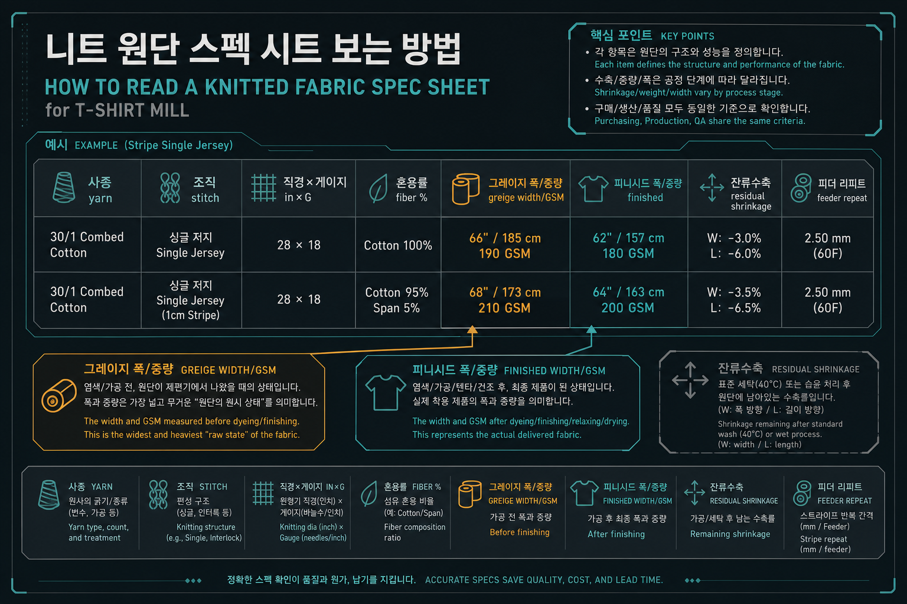
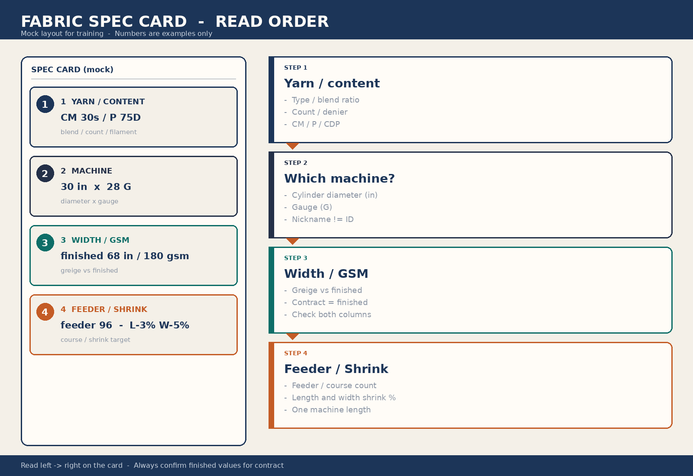

교육자료 · 원단스펙
원단표 한 줄을 읽는 순서. 쉬운 말로 먼저: 무슨 실 → 어느 기계 → 폭·무게 → 줄·수축. 계약 숫자는 보통 가공(피니시드) 기준.
이 페이지 숫자로 공장 규격을 정하지 않는다. 작지·바이어 스펙을 본다.
쉬운 말: 표의 한 행이 한 스펙이다. 사종·조직·기종·폭·GSM·가공·수축을 같이 본다.
생지(그레이지)는 편직 직후. 계약·바이어 숫자는 보통 가공(피니시드) 폭·GSM.
아래 샘플 3행·스펙카드 숫자는 수업 목업이다. 공장 셋팅·합격점으로 쓰지 않는다.
쉬운 말: 면·폴리·카티온·린넨 조합. CM은 코마 면. P150D는 필라멘트(Ne 아님).
쉬운 말: 직경×게이지. 표의 컴퓨터·댕깡·싱가는 현장속칭 — 기종을 표만으로 확정하지 않는다.
쉬운 말: 생지→가공. 생지폭이 더 작아 보여도 튜브 접은 폭일 수 있다. 단위·작지 칸을 먼저 본다.
쉬운 말: 한기장(피더 리피트), 장/폭 남은 수축. 숫자창은 작지.
약실켓 = 라이트 머서라이즈. 노말가공 = 일반 열고정(텐터 폭·오버피드). 한기장 = 피더 리피트. 중량(롤/길이)과 SQM(g/m²)은 따로 본다. 생지폭<가공폭이면 단위 또는 튜브/오픈을 확인. 접은폭×2 후 텐터는 가설. 작지 단위 칸 없이 단정 금지.
수업용 목업. 실제 작지·바이어 스펙과 바꿔 쓰지 않는다.
| 사종 | 조직 | 기종 | in×G | 혼용 | 폭 생→가 | GSM 생→가 | 가공 | 수축 | 이슈 |
|---|---|---|---|---|---|---|---|---|---|
| CM30S/1 × P150D × 실켓멜란 CM60S/2 | 싱글저지 피더스트라이프 S/PLAIN 한기장STRIPE | 전자자카드 환편 (현장: 컴퓨터) 컴퓨터 | 30" × 28G | C 58.7% / P 41.3% | 42 → 68 | 130 → 136 | 일반 열고정 | 장 −1 / 폭 −2.5 | 원단 말림 · 약실켓(라이트 머서라이즈) 검토, WHITE+멜란사 |
| R/C/P 40S/2 방적사 | 싱글저지 피더스트라이프 S/PLAIN 한기장STRIPE | 원단표 속칭 댕깡 (기종 미확정) 댕깡 | 26" × 22G | P 49.2% / C 30.5% / R 20.3% | 33 → 56 | 170 → 190 | 일반 열고정 | 장 −2.5 / 폭 −2.5 | 원단 말림 · 수지가공 검토 |
| 카티온 P150D × P150D × 린넨 50S/2 | 싱글저지 피더스트라이프 1:3:1 S/PLAIN 1F×3F×1F STRIPE | 원단표 속칭 싱가 (기종 미확정) 싱가 | 26" × 22G | P 78.3% / LI 11.9% / C 9.8% | 35 → 54 | 110 → 130 | 일반 열고정 + 수지 | 장 −1 / 폭 −1 | 편직불량 大 · 편직 로스(수업 목업 예) |
| 옛 교재 | 지금 | English | 근거 |
|---|---|---|---|
| 생지 | 그레이지 | greige | 편직기에서 막 나온 미가공. 계약 중량은 보통 피니시드. |
| 가공 | 피니시드 | finished | 염색·텐터·컴팩터 이후. 바이어 스펙의 기준. |
| SQM | g/m² (GSM) | grams per square metre | ISO 3801 / ASTM D3776. 커터 100cm² ×100. 허용 ±3~5%. |
| IN,GG | 직경(in) × 게이지 | diameter × gauge | 30"28G = 실린더 30인치, 28게이지. |
| 한기장 | 피더 리피트 / 코스 리피트 | feeder stripe repeat | 피더스트라이프는 급사구 배열. 큰 반복은 오토스트라이퍼(엔지니어링 스트라이프). |
| 수축율 | 잔류수축 | residual shrinkage | 장=코스방향, 폭=웨일방향. 컴팩터로 관리. |
| 노말가공 | 일반 열고정 | normal heat-set | 텐터 폭·오버피드만. 약실켓·수지와 구분. |
| 약실켓 | 라이트 머서라이즈 | light mercerize | 광택·염색성. 멜란/화이트 조합 시 말림 주의. |
| 수지가공 | 수지 피니시 | resin finish | 형태안정. 촉감·황변 트레이드오프. |
| 혼용률 | 혼용률 / 파이버 콘텐츠 | fiber content % | 라벨·RSL 기준. 카티온P는 헤더/멜란지. |
| 컴퓨터 / 댕깡 / 싱컴 / 싱가 | 현장속칭 (기종 미확정) | shop nicknames | 컴퓨터=전자자카드 후보. 싱컴/싱가/댕깡은 표만으로 확정하지 않음. |
| S/PLAIN | 싱글저지 플레인 | single jersey plain | PQ=피케. JQD=자카드. |
| 원단말림 | 컬링 / 에지컬 | edge curling | 싱글저지+이형사(멜란·카티온)에서 흔함. 수지·컴팩션으로 완화. |
| 편직 로스(수업 목업 예) | 편직 로스(수업 목업 예) | knitting loss allowance | 불량 큰 조직은 발주량에 로스 넣고 돌린다. |
댕깡/싱가/싱컴 기종 미확정. spec-card.png 숫자는 목업.

교육용 영상은 이 페이지에 아직 없다.

작지·바이어 스펙이 우선. 표 숫자는 수업 목업.
작지·바이어 스펙이 우선. 표 숫자는 수업 목업.
작지·바이어 스펙이 우선. 표 숫자는 수업 목업.
작지·바이어 스펙이 우선. 표 숫자는 수업 목업.
작지·바이어 스펙이 우선. 표 숫자는 수업 목업.